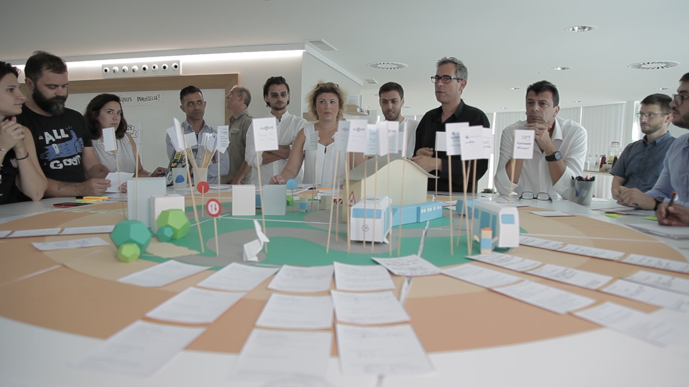

Projet demoiselle :
une expérimentation pour réinventer la mobilité
demoiselle est un projet collectif visant à développer une solution de transport en commun entre la gare d’Aix-en-Provence TGV et la zone d’activité d’Aix La Duranne.
Répondez au sondage
demoiselle en 2 mots
Cette expérimentation a pour objectif d’explorer les solutions de mobilité pour les zones non desservies aujourd’hui par le transport collectif classique : tissu urbain diffus et dernier kilomètre.-
L’autonomisation pour faciliter de nouveaux usages
L’utilisation de technologies d’autonomisation permet d’explorer de nouveaux modèles technico-économiques, permettant notamment la desserte de zones moins urbaines et le transport à la demande.
-
Renouveler l’expérience usager
La personnalisation de l’expérience de voyage et le design cohérent d’un service de dernier kilomètre doivent permettre à l’usager de percevoir différemment le temps passé en déplacement, et ainsi d’améliorer l’attractivité des services de transports en commun.
-
Diminuer l’impact environnemental des déplacements
Par l’utilisation de solutions propres, l’adressage de nouveaux usagers et la promotion des transports collectifs, le projet vise à diminuer l’utilisation des voitures personnelles et les congestions, améliorant ainsi la qualité de l’air. En outre, un objectif affiché du projet est d’explorer des solutions de transports utilisant les infrastructures existantes et ne nécessitant pas d’aménagement majeur.
-

Un vrai projet collaboratif
Aujourd’hui, les limites au développement de nouvelles solutions de mobilité ne sont plus (uniquement) technologiques. Le projet demoiselle fédère un écosystème varié, rassemblant la Métropole d’Aix-Marseille Provence, des instituts de recherche, des startups, des industriels et des étudiants autour d’un objectif commun : proposer un mode de transport sûr et écologique pour demain.
-
L’expérimentation, d’une durée de trois ans, se veut d’utilité publique. À l’issue de celle-ci l’objectif est d’intégrer cette desserte dans le réseau métropolitain, voire de répliquer cette solution dans d'autres zones du territoire, ou dans d'autres régions françaises et européennes.


Un projet innovant
demoiselle est un projet innovant sur de multiples aspects.Voici les trois points principaux.
-
Une gouvernance favorisant l'innovation
thecamp et la Métropole Aix-Marseille Provence se partagent la maîtrise d’ouvrage du projet. L’association « thecamp – demoiselle » est créée afin de fédérer tous les partenaires et les intégrer au projet à hauteur de ce que chacun peut apporter.
-
4 types de terrains différents
La navette demoiselle doit être en mesure d’explorer des terrains différents, permettant la traversée et la desserte de zones variées en s’affranchissant des contraintes d’aménagement.
-
Une expérience à bord unique
La mobilité devient un service. L’attractivité doit être améliorée afin de convaincre de nouveaux usagers d’utiliser les transports collectifs. Ambiances, expériences, informations, tout est envisageable.
“Vous avez su dégager des pistes et une approche réellement pertinente. [...] Ça peut être un formidable laboratoire pour de l’innovation.”
Véronique Berthault, Responsable des Programme de Recherche et Innovation, RATP“demoiselle est un projet d’ambitieux, de gens qui sont plein d’une énergie pour essayer de changer. De changer la mobilité.”
Valérie Fointiat, Professeur des Universités en psychologie sociale, Effisciencity“Le projet demoiselle est piloté par thecamp et la Métropole, [...] avec pour but de développer l'innovation et mettre en lumière le territoire via un projet de mobilité du futur.”
Michel Gonzalez, chargé de projets transport, prospective et innovation, Métropole Aix-Marseille ProvenceLa gare d’Aix-en-Provence TGV peut être soumise à de fortes contraintes de trafic est de stationnement, impliquant un défi technologique pour la navette demoiselle.
Cette route départementale est étroite, le revêtement n’est pas uniforme et elle ne possède pas de marquage au sol. En outre, le croisement est impossible en certains points.
Le chemin rural permet de tester l’autonomie dans un environnement typique du territoire : la garrigue. La navette doit être robuste, une pente à 20% se trouve sur sa route !
Plusieurs arrêts sont prévus dans la zone d’activités, où la circulation des autres véhicules et des piétons doit être prise en compte.
Maîtres d'ouvrage
Partenaires et fondateurs de l'association de projet

Partenaires publics

Organismes de recherche et de formation
Partenaires privés ayant fait part de leur intérêt


Projet cofinancé par l'État au titre du Fonds national pour l'aménagement du territoire
Vous voulez en savoir plus ?
Vous souhaitez rejoindre le projet comme partenaire ? Ou tout simplement être mis au courant ? Vous cherchez à répliquer un projet similaire à côté de chez vous ?
Nous contacter